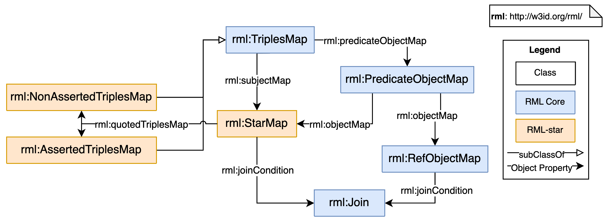

As well as sections marked as non-normative, all authoring guidelines, diagrams, examples, and notes in this specification are non-normative. Everything else in this specification is normative.
2. Introduction
This section is non-normative.
2.1 Overview
RDF-star [RDF-star] is an extension of the Resource Description Framework (RDF) [RDF11-Concepts] that introduces a new kind of term, the quoted triple, which can be referred from the subjects or objects of other triples. Triples that include a quoted triple are known as RDF-star triples.
# The triple ( :Alice a :Person ) is 80% likely to be true
<< :Alice a :Person >> :confidence 0.8 .
In RDF 1.1, an asserted triple is an element of the set of triples that compose an RDF graph. In RDF-star, a quoted triple can be asserted, if it is also included in the RDF graph, or not, if it only occurs as a quoted triple.
# The triple ( :Alice a :Person ) is asserted and quoted
< :Alice a :Person > .
<< :Alice a :Person >> :confidence 0.8 .
The RDF Mapping Language (RML) [RML] is a language for expressing mappings between heterogeneous data and RDF. In RML, rules can be expressed to iterate over a data source and refer to specific data within an iteration. Using these iterators and references, RML rules define how to express data in the data source in RDF. RML is based on and extends R2RML [R2RML]. R2RML is defined to express customized mappings only from relational databases to RDF datasets.
This document describes RML-star: an extension of RML that enables the generation of RDF-star graphs with RML.
2.2 Conventions
This document assumes that the reader is familiar with RDF, RML and RDF-star concepts.
In this document, examples assume that the following prefixes have been declared to represent the IRIs shown with them:
The examples are contained in color-coded boxes. We use the Turtle syntax [Turtle] to write RDF and the N-Triples-star syntax [RDF-star] to write RDF-star.
# This box contains an example input
# This box contains an example mapping
# This box contains the example output
3. The RML-star vocabulary
An RML-star mapping defines a mapping from any data in a structured source format to RDF-star. It consists of one or more Triples Maps that can in turn contain Triples Maps within the subject or object. A Triples Map can be Asserted or Non Asserted, depending on whether the triples that they generate should be included in the output graph.
The input to an RML-star mapping is called input data source. The output of an RML-star mapping is called output dataset.
The output dataset of an RML-star mapping is an RDF-star dataset that contains the generated RDF-star triples for each of the Triples Maps in the RML-star mapping. An RML-star processor may provide additional triples or graphs.
As in RML, conforming RML-star processors may rename blank nodes when providing access to the output dataset.
an execution environment consisting of an SQL connection and an input database (as stated by the [R2RML] specification).
an input data source (as stated by the [RML] specification).
A base IRI is used in resolving relative IRIs produced by the RML-star mappings. According to the [R2RML] specification, the base IRI must be a valid [IRI]. It should not contain question mark (“?”) or hash (“#”) characters and should end in a slash (“/”) character.
The RML-star vocabulary consists of the RML-star specific defined classes but also includes all the [R2RML] and [RML] classes.
rml:TriplesMap is the class of Triples Maps as defined by R2RML.
rml:AssertedTriplesMap is the class of Triples Maps that are asserted.
rml:NonAssertedTriplesMap is the class of Triples Maps that are not asserted, but only quoted.
rml:LogicalSource is the class of logical sources as defined by RML.
rml:BaseSource is the class of data sources used as input source as defined by RML. R2RML's rml:BaseTableOrView is a subclass of rml:BaseSource.
rml:TermMap is the class of Term Maps, as defined by R2RML. It has four subclasses:
rml:SubjectMap is the class of Subject Maps.
rml:PredicateMap is the class of Predicate Maps.
rml:ObjectMap is the class of Object Maps.
rml:GraphMap is the class of graph maps.
rml:LanguageMap is the class of language maps as defined by RML.
rml:StarMap is the class of RDF-star Term Maps.
rml:PredicateObjectMap is the class of Predicate-Object Maps.
rml:RefObjectMap is the class of referencing Object Maps.
rml:Join is the class of join conditions.
rml:ReferenceFormulation is the class of supported reference formulations as defined by RML.
3.1 Overview of RML-star terms
The RML-star terms are summarized in the following tables.
This vocabulary involves three classes (rml:StarMap, rml:AssertedTriplesMap and rml:NonAssertedTriplesMap), and one object property (rml:quotedTriplesMap).
Property
Domain
Range
rml:quotedTriplesMap
rml:StarMap
rml:TriplesMap
Class
Superclass
rml:StarMap
owl:Thing
rml:AssertedTriplesMap
rml:TriplesMap
rml:NonAssertedTriplesMap
rml:TriplesMap
All RML-star additions and changes to RML are shown in Figure 1:

Figure 1To enable the generation of RDF-star graphs, RML-star adds three classes and one object property to the RML ontology.
4. Generating quoted triples with RML-star
A Star Map (rml:StarMap) is similar to a term map that generates quoted triples.
It can be used within Subject or Object Maps.
A Star Map is linked to a Triples Map by the quoted Triples Map property (rml:quotedTriplesMap).
The quoted triples generated by a Star Map are exactly those triples generated by its quoted Triples Map.
If a Star Map has the same logical source as its quoted Triples Map, then for each logical iteration, the quoted triples generated by a Star Map are those triples generated by its quoted Triples Mapfor the same logical iteration.
If a Star Map has a different logical source than its quoted Triples Map then a join is used, as described in the next section.
In the following example, for each logical iteration (i.e., each CSV row) a "type" triple is generated by <#innerTriplesMap> that occurs
in the resulting graph both as an asserted and as a quoted triple:
# Contents of the ex:ConfidenceSource logical source
entity , class , confidence
Alice , Person , 0.8
Bobby , Dog , 0.6
# Triples Map that generates "type" triples that are asserted and quoted
<#innerTriplesMap>
a rml:AssertedTriplesMap;
rml:logicalSource ex:ConfidenceSource;
rml:subjectMap [
rml:template "http://example.com/{entity}"
];
rml:predicateObjectMap [
rml:predicate rdf:type;
rml:objectMap [ rml:template "http://example.com/{class}" ];
].
# Triples Map that generates "confidence" triples
<#outerTriplesMap>
a rml:AssertedTriplesMap;
rml:logicalSource ex:ConfidenceSource;
rml:subjectMap [
rml:quotedTriplesMap <#innerTriplesMap>;
];
rml:predicateObjectMap [
rml:predicate ex:confidence;
rml:objectMap [ rml:reference "confidence" ];
].
# Triples generated by <#innerTriplesMap>
ex:Alice a ex:Person .
ex:Bobby a ex:Dog .
# Triples generated by <#outerTriplesMap>
<< ex:Alice a ex:Person >> ex:confidence 0.8 .
<< ex:Bobby a ex:Dog >> ex:confidence 0.6 .
The previous example shows a quoted triple within a Subject Map.
Since quoted triples can be both subjects or objects, Star Maps can also
be used in the position of Object Maps, as shown in the following example:
# Contents of the ex:ConfidenceSource logical source
entity , pet , class
Alice , Bobby , Dog
Steve , Pumpkin , Cat
# Triples Map that generates "type" triples that are asserted and quoted
<#innerTriplesMap>
a rml:AssertedTriplesMap;
rml:logicalSource ex:ConfidenceSource;
rml:subjectMap [
rml:template "http://example.com/{pet}"
];
rml:predicateObjectMap [
rml:predicate rdf:type;
rml:objectMap [ rml:template "http://example.com/{class}" ];
].
# Triples Map that generates "has pet" triples
<#outerTriplesMap>
a rml:AssertedTriplesMap;
rml:logicalSource ex:ConfidenceSource;
rml:subjectMap [
rml:template "http://example.com/{entity}";
];
rml:predicateObjectMap [
rml:predicate ex:has_pet;
rml:objectMap [ rml:quotedTriplesMap <#innerTriplesMap> ];
].
# Triples generated by <#innerTriplesMap>
ex:Bobby a ex:Dog .
ex:Pumpkin a ex:Cat .
# Triples generated by <#outerTriplesMap>
ex:Alice ex:has_pet << ex:Bobby a ex:Dog >> .
ex:Steve ex:has_pet << ex:Pumpkin a ex:Cat >> .
Asserted Triples Map generate asserted triples.
If an Asserted Triples Map is also used in a Star Map, the triples it generates also occur in the resulting graph as quoted triples, by the process explained above.
To generate quoted triples without assering them, Non Asserted Triples Maps are used instead.
A Triples Map of subclass non-asserted Triples Map does not generate asserted triples,
but might generate quoted triples if it is used in a Star Map.
The following example is different than the previous in that <#innerTriplesMap> is declared to be an instance of rml:NonAssertedTriplesMap, with the effect that the generated "type" triples are only present in the resulting graph as quoted triples, not as asserted triples:
# Contents of the ex:ConfidenceSource logical source
entity , class , confidence
Alice , Person , 0.8
Bobby , Dog , 0.6
# Triples Map that generates "type" triples that are only quoted, not asserted
<#innerTriplesMap>
a rml:NonAssertedTriplesMap;
rml:logicalSource ex:ConfidenceSource;
rml:subjectMap [
rml:template "http://example.com/{entity}";
];
rml:predicateObjectMap [
rml:predicate rdf:type;
rml:objectMap [ rml:template "http://example.com/{class}" ];
].
# Triples Map that generates "confidence" triples
<#outerTriplesMap>
a rml:AssertedTriplesMap;
rml:logicalSource ex:ConfidenceSource;
rml:subjectMap [
rml:quotedTriplesMap <#innerTriplesMap>;
];
rml:predicateObjectMap [
rml:predicate ex:confidence;
rml:objectMap [ rml:reference "confidence" ];
].
<< ex:Alice a ex:Person >> ex:confidence 0.8 .
<< ex:Bobby a ex:Dog >> ex:confidence 0.6 .
A summary of how to generate triples in any combination of asserted and/or quoted triples is given in the following table:
Quoted
Not quoted
Asserted
rml:AssertedTriplesMapwithrml:StarMap
rml:AssertedTriplesMapwithoutrml:StarMap
Not asserted
rml:NonAssertedTriplesMapwithrml:StarMap
-
It should be noted that Non Asserted Triples Maps that are not quoted do not generate any triple. For this reason, the use of rml:NonAssertedTriplesMapwithoutrml:StarMapis not allowed. rml:NonAssertedTriplesMap must always be called with rml:quotedTriplesMap.
5. Generating quoted triples from multiple sources
# Contents of logical source ex:ClassesSource
entity , class
Alice , Person
Bobby , Dog
# Contents of logical source ex:ConfidencesSource
entity , confidence
Alice , 0.8
Bobby , 0.6
# Triples Map that generates objects of "type" triples
<#classTriplesMap>
a rml:AssertedTriplesMap;
rml:logicalSource ex:ClassesSource;
rml:subjectMap [
rml:template "http://example.com/{class}";
].
# Triples Map that generates "type" triples using a join
<#innerTriplesMap>
a rml:NonAssertedTriplesMap;
rml:logicalSource ex:ConfidencesSource;
rml:subjectMap [
rml:template "http://example.com/{entity}";
];
rml:predicateObjectMap [
rml:predicate rdf:type ;
rml:objectMap [
rml:parentTriplesMap <#classTriplesMap> ;
rml:joinCondition [
rml:parent "entity" ;
rml:child "entity" ;
];
];
].
# Triples Map that generates "confidence" triples
<#outerTriplesMap>
a rml:AssertedTriplesMap;
rml:logicalSource ex:ConfidencesSource;
rml:subjectMap [
rml:quotedTriplesMap <#innerTriplesMap>;
];
rml:predicateObjectMap [
rml:predicate ex:confidence;
rml:objectMap [ rml:reference "confidence" ];
].
<< ex:Alice a ex:Person >> ex:confidence 0.8 .
<< ex:Bobby a ex:Dog >> ex:confidence 0.6 .
6. Generating deeply nested quoted triples
It is possible to create more deeply nested RDF-star by using a Quoted Triples Map that on its own turn also uses a Quoted Triples Map.
Note: this process for generating deeply nested quoted triples is not different from the general process to create quoted triples described earlier, but we include this section for clarity.
# Contents of Logical Source ex:PredictionsSource
entity , class , confidence , predictor
Alice , Person , 0.8 , alpha
Alice , Giraffe , 1.0 , alpha
Bobby , Dog , 0.6 , alpha
Bobby , Giraffe , 1.0 , beta